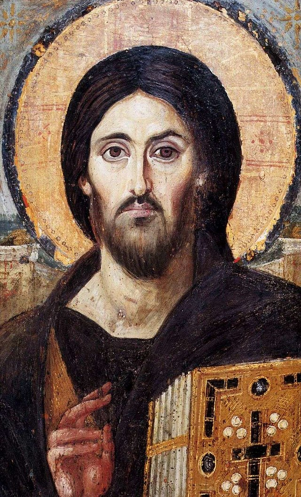

Gud skapar världen
I begynnelsen skapade Gud himmel och jord. Jorden var öde och tom, djupet täcktes av mörker och en gudsvind svepte fram över vattnet. Gud sade: »Ljus, bli till!« Och ljuset blev till. Gud såg att ljuset var gott, och han skilde ljuset från mörkret. Gud kallade ljuset dag, och mörkret kallade han natt. Det blev kväll och det blev morgon. Det var den första dagen.Gud sade: »I vattnet skall ett valv bli till, och det skall skilja vatten från vatten.« Och det blev så. Gud gjorde valvet och skilde vattnet under valvet från vattnet ovanför valvet. Gud kallade valvet himmel. Det blev kväll och det blev morgon. Det var den andra dagen.Gud sade: »Vattnet under himlen skall samlas till en enda plats, så att land blir synligt.« Och det blev så. Gud kallade det torra landet jord, och vattenmassan kallade han hav. Och Gud såg att det var gott. Gud sade: »Jorden skall ge grönska: fröbärande örter och olika arter av fruktträd med frö i sin frukt skall växa på jorden.« Och det blev så. Jorden frambringade grönska: olika arter av fröbärande örter och olika arter av träd med frö i sin frukt. Och Gud såg att det var gott. Det blev kväll och det blev morgon. Det var den tredje dagen.Gud sade: »På himlavalvet skall ljus bli till, och de skall skilja dagen från natten och utmärka högtider, dagar och år. De skall vara ljus på himlavalvet och lysa över jorden.« Och det blev så. Gud gjorde de två stora ljusen, det större ljuset till att härska över dagen och det mindre till att härska över natten, och han gjorde stjärnorna. Han satte ljusen på himlavalvet att lysa över jorden, att härska över dag och natt och att skilja ljus från mörker. Och Gud såg att det var gott. Det blev kväll och det blev morgon. Det var den fjärde dagen.Gud sade: »Vattnet skall vimla av levande varelser, och fåglar skall flyga över jorden, under himlavalvet.« Gud skapade de stora havsdjuren och alla olika arter av levande varelser som vattnet myllrar och vimlar av och alla olika arter av fåglar. Och Gud såg att det var gott . Gud välsignade dem och sade: »Var fruktsamma och föröka er och uppfyll sjöar och hav. Och på jorden skall fåglarna föröka sig.« Det blev kväll och det blev morgon. Det var den femte dagen.Gud sade: »Jorden skall frambringa olika arter av levande varelser: boskap, kräldjur och vilda djur av olika arter.« Och det blev så. Gud gjorde de olika arterna av vilda djur, boskap och markens kräldjur. Och Gud såg att det var gott.Gud sade: »Vi skall göra människor som är vår avbild, lika oss. De skall härska över havets fiskar, himlens fåglar, boskapen, alla vilda djur och alla kräldjur som finns på jorden.« Gud skapade människan till sin avbild, till Guds avbild skapade han henne. Som man och kvinna skapade han dem. Gud välsignade dem och sade till dem: »Var fruktsamma och föröka er, uppfyll jorden och lägg den under er. Härska över havets fiskar och himlens fåglar och över alla djur som myllrar på jorden.«Gud sade: »Jag ger er alla fröbärande örter på hela jorden och alla träd med frö i sin frukt; detta skall ni ha att äta. Åt markens djur, åt himlens fåglar och åt dem som krälar på jorden, allt som har liv i sig, ger jag alla gröna örter att äta.« Och det blev så. Gud såg att allt som han hade gjort var mycket gott. Det blev kväll och det blev morgon. Det var den sjätte dagen.
Jesus
Tryck på Jesus